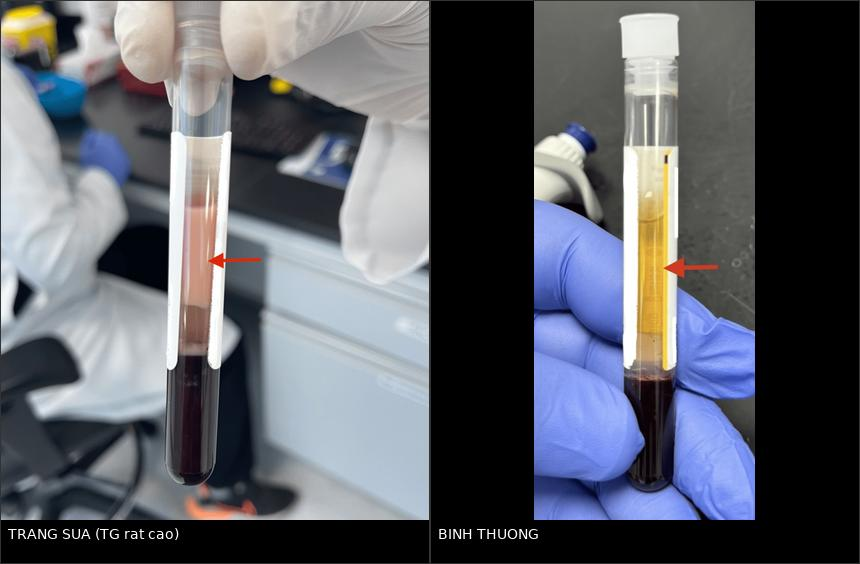
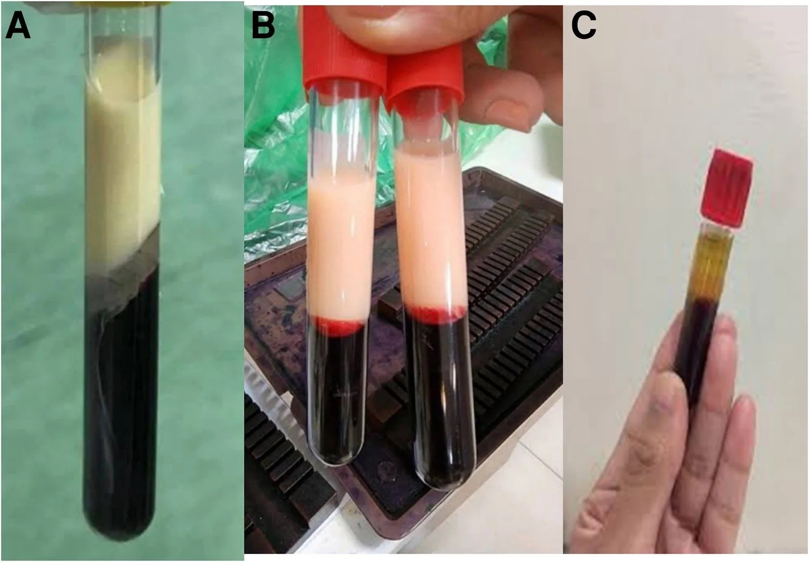
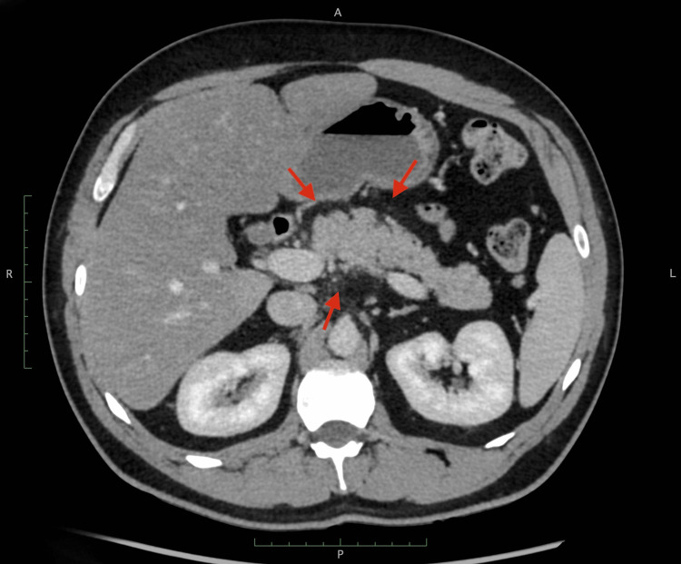
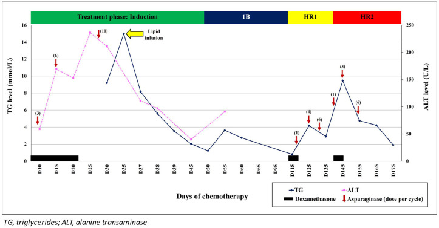

684 — Tăng triglyceride do asparaginase/pegaspargase ở trẻ ALL: ngưỡng giữ – giảm – ngừng liều, khi nào tái dùng & biến chứng (viêm tụy, huyết khối xoang)
Tags: pattern:tang-triglyceride pattern:viem-tuy-cap pattern:huyet-khoi-xoang vung:tuy vung:mach-nao score:CTCAE-HTGT protocol:CT-bung protocol:MRV incidentaloma:khong
Mức chắc chắn (certainty): tổng hợp y văn (literature synthesis) — ghép 3 nghiên cứu đoàn hệ lớn (598, 641, 586 trẻ) + 1 phân tích gộp + 2 ca nguyên văn có ảnh; không có thử nghiệm ngẫu nhiên nào về ngưỡng ngừng/tái dùng asparaginase — mọi "ngưỡng xử trí" dưới đây là tổng hợp thực hành, ghi rõ chỗ là đồng thuận và chỗ là suy luận.
Điểm chốt của bài: tăng triglyceride (TG) do asparaginase thường KHÔNG có triệu chứng (83% trong loạt 12 ca) và tự hồi phục — nên câu hỏi thực hành không phải "có ngừng thuốc không?" mà là "có biến chứng gì đang xảy ra mà hình ảnh phải tìm?": viêm tụy (kể cả khi amylase/lipase bình thường), huyết khối xoang tĩnh mạch não (CVST), hoại tử xương, và sai lệch xét nghiệm do lipemia (hạ natri giả, amylase giả thấp). Đồng thuận chuyên gia hiện hành: tăng TG đơn thuần không phải lý do giảm liều/ngừng asparaginase — nhưng phải chứng minh TG dưới 1.000 mg/dL trước mỗi liều tiếp theo và phải loại trừ biến chứng bằng lâm sàng + hình ảnh.
1. Tổng quan bệnh học – cơ chế hình ảnh
1.1 TẠI SAO asparaginase làm TG tăng: ba mắt xích enzym
Asparaginase (ASNase) thủy phân asparagine tuần hoàn thành aspartate + amoniac, làm tế bào lympho non thèm asparagine chết. Nhưng enzym này cạn asparagine ở mọi tế bào, kể cả tế bào gan và nội mô — nơi tổng hợp lipoprotein lipase (LPL) và apoC-II. Hệ quả:
- Giảm hoạt tính LPL (enzym duy nhất thủy phân TG trong chylomicron/VLDL tại mao mạch) → TG không được thanh thải.
- Tăng tổng hợp và bài tiết VLDL từ gan (gan nhiễm mỡ do thiếu asparagine + corticoid đồng vận).
- Corticoid liều cao trong cùng phác đồ làm tăng VLDL và giảm hoạt tính LPL → hiệp lực, không phải hai nguyên nhân riêng lẻ.
Bằng chứng định lượng cho "hiệp lực" này: hai thử nghiệm St. Jude có cùng phác đồ corticoid nhưng khác chế phẩm — nhóm dùng PEG-asparaginase có TG tăng 4,5 lần và tăng TG nặng (> 1.000 mg/dL) 10,5% so với 5,5% ở nhóm dùng asparaginase E. coli tự nhiên (p = 0,007); ở tuần 7, dexamethasone đơn thuần không làm TG tăng, chỉ khi có thêm asparaginase (Finch ER et al., Pediatr Blood Cancer 2020, PMC6868303).
- Ngưỡng bão hòa LPL: khi TG > 885 mg/dL, LPL không còn khả năng thanh thải chylomicron hiệu quả → tích lũy và tăng nguy cơ viêm tụy (AHA 2026, dẫn trong Barbar M et al., Front Oncol 2026, PMC13337426).
- Vì sao PEG-asparaginase nặng hơn: thời gian bán thải dài, hoạt tính enzym kéo dài → ức chế LPL liên tục; calaspargase pegol còn dài hơn, với khoảng khởi phát rộng 3–69 ngày (MD Anderson, dẫn trong PMC13337426).
1.2 TẠI SAO huyết thanh "trắng sữa" — vật lý thuần túy
Chylomicron là hạt đường kính ~75–1.200 nm, lớn hơn bước sóng ánh sáng khả kiến → tán xạ Mie mạnh. Huyết thanh bình thường trong (ánh sáng truyền qua), huyết thanh đầy chylomicron tán xạ trắng đục như sữa. Đây là dấu hiệu nhìn thấy bằng mắt, miễn phí, trước khi có kết quả TG — và là cách phát hiện chính trong thực hành (8/12 ca của loạt Barbar được phát hiện vì ống máu đục).
Hệ quả xét nghiệm (rất dễ đọc sai):
- Hạ natri giả (pseudohyponatremia): thể tích pha nước bị chylomicron chiếm chỗ → Na đo được thấp giả. Công thức hiệu chỉnh: Na hiệu chỉnh = Na đo được + 0,002 × TG (mg/dL) (tương đương + 0,2 × TG tính bằng g/L) — Hinson A et al., Case Rep Pediatr 2014 (PMC4227320). Trong 12 ca Barbar, 1 ca nhập viện vì hạ natri giả + đau đầu + nhìn mờ (TG 3.900 mg/dL).
- Amylase/lipase có thể bình thường hoặc thấp giả do lipemia gây nhiễu quang học/pha loãng → men tụy bình thường KHÔNG loại trừ viêm tụy; đây là lý do hình ảnh có vai trò quyết định (mục 4).
- TG > 1.000 mg/dL làm tắc máy xét nghiệm sinh hóa (đồng thuận Haematologica 2025, PMC12666278) → phải pha loãng, ly tâm, hoặc báo phòng xét nghiệm.
1.3 TẠI SAO tăng TG lại liên quan huyết khối và hoại tử xương
- Huyết khối: asparaginase giảm tổng hợp antithrombin III và fibrinogen; đồng thời TG rất cao làm tăng độ nhớt và hoạt hóa bạch cầu → trạng thái giảm đông – tăng đông song song (đông máu nội mạch). Trong loạt 741 trẻ ALL, CVST do pegaspargase 1,4% (11 ca); nhóm nhập ICU có liều tích lũy 4.000 IU/m² so với 2.250 IU/m² ở nhóm điều trị thường (r = 0,75 giữa liều tích lũy và độ nặng) — Cao L et al., Transl Pediatr 2026 (PMC12877869).
- Hoại tử xương (ON): trong phân tích gộp 13 nghiên cứu (3.425 trẻ), TG độ 3/4 làm tăng nguy cơ ON: OR 4,27 (KTC 95% 2,77–6,61); liên quan viêm tụy OR 1,60 (0,53–4,82) và huyết khối OR 2,45 (0,86–7,01) đều không có ý nghĩa (Laumann RD et al., Pediatr Blood Cancer 2023) — nghĩa là tăng TG là dấu hiệu nguy cơ của ON và có thể của huyết khối, chứ không phải nguyên nhân trực tiếp của viêm tụy.
1.4 Ngưỡng định lượng bắt buộc nhớ
Phân độ CTCAE v5.0 (thang chuẩn dùng trong mọi phác đồ ung thư nhi; trích từ Zawitkowska J et al., Cancer Manag Res 2026, PMC12934241):
- Độ 0 (bình thường): TG < 150 mg/dL (< 1,7 mmol/L).
- Độ 1: 150–300 mg/dL (1,71–3,42 mmol/L).
- Độ 2: > 300–500 mg/dL (> 3,42–5,7 mmol/L).
- Độ 3: > 500–1.000 mg/dL (> 5,7–11,4 mmol/L).
- Độ 4: > 1.000 mg/dL (> 11,4 mmol/L) — ngưỡng "nặng" theo AHA 2026; > 2.000 là "rất nặng".
Ngưỡng xử trí (AHA 2026, khoa nhi): nặng (severe) > 1.000 mg/dL; rất nặng (very severe) > 2.000 mg/dL — mốc gắn với tăng nguy cơ viêm tụy cấp.
Tần suất thực tế (để không hoảng và không chủ quan):
- Tăng TG bất kỳ trong điều trị ALL: 6,7%–85%, trung vị 27% (13 nghiên cứu, 3.425 trẻ — Laumann 2023).
- Tăng TG nặng > 1.000 mg/dL: 2% (12/598, Barbar 2026 — tác giả ghi rõ đây là ước lượng tối thiểu vì không theo dõi TG định kỳ), 4%–19% theo y văn, 7% (18/257, Bhojwani D et al., Eur J Cancer 2014), và 10,5% với PEG-ASP (Finch 2020).
- Loạt quốc gia Ba Lan (641 trẻ): 11,1% (72 ca) có tăng TG, 72% trong số đó là độ 3–4; TG đỉnh trung vị 1.385 mg/dL (IQR 525–2.533); không ca nào viêm tụy; biến chứng 5,6% (ĐTĐ 1, hoại tử xương 2, viêm gan 1); gián đoạn điều trị trung vị 5,67 ngày; TG sau điều trị về 136 mg/dL (Zawitkowska 2026).
2. Mẫu hình + chẩn đoán phân biệt theo cơ chế (Gamut)
Mẫu hình cần nhận ra: trẻ ALL đang/ngay sau asparaginase, ống máu đục, TG tăng đơn độc hoặc kèm tăng cholesterol, có thể kèm hạ natri "không giải thích". Gamut theo cơ chế, không theo hình thái:
- Nhóm 1 — Thuốc ức chế LPL/thanh thải: asparaginase (mọi chế phẩm: native E. coli, PEG, Erwinia, calaspargase), corticoid liều cao, sirolimus/ức chế mTOR, isotretinoin, estrogen, propofol.
- Nhóm 2 — Thiếu insulin/tăng VLDL: DKA/ĐTĐ kiểm soát kém (rất hay gặp song hành, nhất là khi dùng corticoid), béo phì/kháng insulin, hội chứng chuyển hóa.
- Nhóm 3 — Di truyền (nền tảng ẩn): FCS thể đồng hợp/dị hợp kép (LPL, APOC2, APOA5, GPIHBP1, LMF1), thể dị hợp LPL/APOA5 làm tăng nhạy cảm với thuốc — 2 ca của Krivosheina M et al. (World J Clin Pediatr 2026, PMC13491175) mang LPL rs1801177 (1,6% dân số), LPL rs268 (1,97%) và APOA5 VUS; 5/7 ca có TG nền > 150 mg/dL trước điều trị (Barbar 2026).
- Nhóm 4 — Dinh dưỡng/TPN: nhũ tương lipid (SMOFlipid, propofol) — chính là "liều lipid" làm TG tăng thêm (xem ảnh biểu đồ mục 3); chế độ ăn nhiều mỡ.
- Nhóm 5 — Thứ phát khác: suy giáp, hội chứng thận nhiễm mỡ, bệnh gan ứ mật, rượu (người lớn).
Gợi nhớ "LIPID": LPL (asparaginase ức chế + đột biến LPL), Insulin thiếu (DKA), Prednisone/corticoid, Inherited (APOA5/FCS) + Infusion lipid, Diet/obesity.
Điểm phân biệt quan trọng nhất trên lâm sàng: tăng TG do thuốc hồi phục sau khi giảm/ngừng thuốc và giảm mỡ trong vài ngày đến vài tuần; FCS không hồi phục với chế độ ăn thông thường và TG > 1.500 mg/dL từ nhũ nhi. Đừng dán nhãn "do asparaginase" cho một FCS bị bỏ sót — hậu quả là trẻ tiếp tục ăn mỡ và tái viêm tụy.
3. Bảng so sánh phân biệt (ma trận đối chiếu)
| Thực thể (entity) | Hình ảnh / xét nghiệm điển hình | Chốt vào (rule-in) | Chốt loại (rule-out) | Gợi ý xác nhận |
|---|---|---|---|---|
| Tăng TG do asparaginase (AAHTG) | TG tăng 5–21 ngày sau liều (trung vị 12), không triệu chứng 83%; ống máu đục; CT bụng thường bình thường | TG tăng theo mốc liều + giảm sau khi ngừng/giảm liều + tái tăng khi tái dùng | TG cao không đổi dù đã ngừng asparaginase 4–6 tuần → tìm nguyên nhân khác | TG trước – ngày 7–14 sau mỗi đợt; xem ống máu |
| Viêm tụy cấp do TG (HTG-AP) | Tụy phù, thấm mỡ quanh tụy (stranding), dịch quanh tụy; hoại tử cần ≥ 72 giờ mới rõ trên CECT; amylase/lipase có thể BÌNH THƯỜNG | Đau bụng điển hình + hình ảnh (2/3 tiêu chuẩn Atlanta, không cần enzym) | CT bình thường trong 24–48 giờ đầu không loại trừ; lặp siêu âm/CT sau 48–72 giờ | Siêu âm bụng trước (ALARA), CECT khi chẩn đoán chưa rõ hoặc nghi hoại tử |
| FCS / tăng TG di truyền | TG > 1.500 (có ca 8.014 mg/dL lúc 5 tháng tuổi), huyết thanh trắng sữa từ nhũ nhi, gan lách to, lipemia retinalis, xanthoma | TG rất cao từ nhỏ + không đáp ứng chế độ ăn + biến thể LPL/APOA5/LMF1 | TG giảm mạnh khi hạn chế mỡ < 10–15% calo → gợi ý nguyên nhân môi trường/thuốc | Gene panel lipid (LPL, APOA5, LMF1, GPIHBP1, APOC2); TG mẹ |
| Tăng TG do corticoid đơn thuần | TG tăng nhẹ–vừa, không tăng vọt sau liều asparaginase; thường kèm tăng glucose, béo trung tâm | TG tăng trong giai đoạn corticoid, không theo mốc asparaginase | TG tăng vọt 1–3 tuần sau liều PEG-ASP → do asparaginase | Đối chiếu lịch liều; TG ở tuần không có asparaginase |
| DKA / thiếu insulin | Đường huyết cao, toan ceton, TG thường 500–2.000; tụy có thể chưa viêm | DKA + TG cao, giảm nhanh khi truyền insulin | TG vẫn > 1.000 sau khi hết toan ceton → nguyên nhân lipid độc lập | Khí máu, ceton, HbA1c |
| Huyết khối xoang tĩnh mạch não (CVST) | CT tĩnh mạch/MRV: khuyết thuốc xoang, xoang ngang/dọc trên giãn, nhồi máu xuất huyết hai bên | Đau đầu + co giật/liệt khu trú ở trẻ đang asparaginase + khuyết thuốc xoang | CT không cản quang bình thường không loại trừ CVST | MRV/CTV (bài 216); D-dimer không loại trừ |

Trái: huyết thanh trắng đục như sữa — dấu hiệu nhìn thấy bằng mắt của TG rất cao. Phải: huyết thanh trong bình thường (đối chiếu). Nguồn: Ibrahim H et al., Cureus 2024 (PMC11246614), Fig. 2 & 3, CC BY 4.0; ghép letterbox bằngtools/make_composite.py.

Ba thời điểm ở một nhũ nhi 5 tháng tuổi bị hội chứng chylomicronemia gia đình (FCS) — dùng để hiểu động học của lipemia, không phải ca asparaginase: (A) lúc nhập viện, TG 8.014 mg/dL (207,2 mmol/L) — lớp trên đặc như kem; (B) vẫn đục sau 1 tháng; (C) sau can thiệp chế độ ăn — huyết thanh trở lại trong. Bài học: độ đục của ống máu theo dõi được bằng mắt và hồi phục khi TG giảm; nếu ống máu vẫn đục dù đã ngừng asparaginase 4–6 tuần → nghĩ nguyên nhân di truyền. Nguồn: Kumar PR et al., JCEM Case Reports 2026 (PMC13634674), Fig. 1, CC BY 4.0.
CT bụng có cản quang (ca người lớn tăng TG — dùng làm mẫu hình, không phải ca asparaginase nhi): thấm mỡ (stranding) thưa quanh thân–đuôi tụy (mũi tên) — viêm tụy cấp thể kẽ rất kín đáo, dễ đọc "bình thường" nếu không đo và không so sánh mật độ mỡ quanh tụy. Nguồn: Ibrahim H et al., Cureus 2024 (PMC11246614), Fig. 1, CC BY 4.0.4. Protocol chụp + hệ phân độ/điểm chuẩn hóa
4.1 Theo dõi TG — "protocol" thực tế (chưa có chuẩn quốc tế)
Không có khuyến cáo quốc tế thống nhất về lịch đo TG (Zawitkowska 2026 ghi rõ: "triglyceride measurements are currently not standardized and are not performed at predefined time points"). Tổng hợp thực hành đã công bố:
- Trước điều trị: lipid panel lúc đói (TG, cholesterol, HDL) — 5/7 ca có TG nền > 150 mg/dL, và 50% có BMI ≥ 85th percentile, tức là nhóm nguy cơ nhận diện được trước khi tiêm (Barbar 2026; Finch 2020: điểm đa gen TG giải thích nhiều nhất ở thời điểm nền, giảm dần trong điều trị).
- Trong điều trị: TG ngày 7 và 14 sau mỗi đợt PEG-ASP (khoảng khởi phát 5–21 ngày, trung vị 12) + bất kỳ lúc nào thấy ống máu đục. Với calaspargase pegol, cửa sổ rộng hơn (3–69 ngày) → không được chỉ đo một lần.
- Sau một đợt AAHTG: đo TG trước mỗi liều tiếp theo; chỉ tiêm khi TG < 1.000 mg/dL (Barbar 2026 — 8 ca tái dùng, chỉ 1 ca (12,5%) tái tăng).
- Theo dõi dài hạn: lipid panel sau kết thúc điều trị (TG về 136 mg/dL trung vị trong loạt Ba Lan; 12/12 ca Bhojwani bình thường hóa sau khi kết thúc phác đồ).
4.2 Ngưỡng hành động (flowchart)
flowchart TD
A["Trẻ ALL nhận asparaginase hoặc pegaspargase"] --> B["Đo TG lúc đói: trước điều trị + ngày 7 và 14 sau mỗi đợt"]
B --> C{"TG mg/dL"}
C -->|"dưới 500 - CTCAE độ 0 đến 2"| D["Tiếp tục phác đồ; dặn dò đau bụng, đau đầu, đau khớp"]
C -->|"500 đến 1.000 - độ 3"| E["Tiếp tục asparaginase; hạn chế mỡ, omega-3; theo dõi TG mỗi tuần"]
C -->|"trên 1.000 - độ 4"| F{"Có triệu chứng bụng, thần kinh hay hội chứng tăng nhớt?"}
F -->|"Không"| G["Hoãn liều kế tiếp đến khi TG dưới 1.000; insulin 0,01 IU/kg/giờ + glucose 10%; fibrate và omega-3"]
F -->|"Có"| H["Nhập ICU: insulin truyền liên tục; plasmapheresis nếu TG trên 6.000 hoặc có triệu chứng tăng nhớt"]
G --> I["Tái dùng asparaginase khi TG dưới 1.000 trước mỗi liều"]
H --> I
I --> J["Nếu tái tăng: đo lại trước mỗi liều, cân nhắc đổi chế phẩm; chụp CT bụng hoặc MRV khi có triệu chứng"]
4.3 Điều trị — số liệu từ loạt lớn nhất
| Biện pháp | Liều / cách dùng | Bằng chứng & lưu ý |
|---|---|---|
| Hạn chế mỡ + omega-3 | Mỡ < 10–15% calo; omega-3 (EPA/DHA) | Nền tảng ở mọi mức; TG về bình thường trung vị 8 ngày (3 ngày–6 tháng) trong loạt Barbar |
| Insulin truyền liên tục | 0,01 IU/kg/giờ + glucose 10%, theo dõi đường huyết mỗi 2 giờ | 11/12 ca; hạ TG xuống < 1.000 sau trung vị 3 ngày (1–9); hạ đường huyết KHÔNG triệu chứng 80% → phải theo dõi đường huyết, không chỉ nhìn triệu chứng |
| Fibrate / statin | Fibrate (gemfibrozil 70 mg/kg/ngày trong ca nhi) | Dùng ở 41,7% loạt Ba Lan; đồng thuận Haematologica: fibrate còn giúp giảm nhiễu máy xét nghiệm khi TG > 1.000 |
| Heparin | Truyền | 34,7% loạt Ba Lan; giải phóng LPL nội mô tạm thời, nguy cơ chảy máu khi có giảm tiểu cầu/giảm fibrinogen — không dùng thường quy |
| Plasmapheresis (TPE) | 1 lần (đa số) | Chỉ định: TG > 6.000 hoặc hội chứng tăng nhớt; 1 lần đưa TG < 1.000 ở 3/3 ca (Barbar); 8,3% loạt Ba Lan. Không khuyến cáo thường quy (ASFA) |
| Ngừng asparaginase vĩnh viễn | — | Chỉ khi: có triệu chứng (viêm tụy, tăng nhớt), kháng trị, hoặc đã hết liều theo phác đồ (4/12 ca Barbar). Đồng thuận Haematologica: tăng TG đơn thuần KHÔNG đủ lý do giảm liều/ngừng |
4.4 Hình ảnh: chụp gì, khi nào, để trả lời câu gì
| Câu hỏi lâm sàng | Modality ưu tiên | Dấu hiệu cần tìm | Lưu ý kỹ thuật |
|---|---|---|---|
| Có viêm tụy không (khi đau bụng, enzym không tin được) | Siêu âm bụng trước (ALARA) → CT bụng có cản quang nếu chưa rõ | Tụy to/giảm âm; thấm mỡ quanh tụy, dịch quanh tụy, dày cân mạc treo | CECT: hoại tử chưa thấy trước 72 giờ; chụp sớm chỉ để loại trừ biến chứng mạch/ổ bụng |
| Biến chứng tại chỗ (sau 2–4 tuần) | MRI/MRCP (trẻ, cần nhiều lần) hoặc CT | Nang giả tụy (pseudocyst) sau ≥ 4 tuần, hoại tử có vách (WON), rò ống tụy | Nang giả gặp 26% trung bình (tới 60%) sau viêm tụy do asparaginase; 56% ca có di chứng hình ảnh |
| Huyết khối xoang não (đau đầu, co giật, nhìn mờ) | MRV hoặc CTV | Khuyết thuốc xoang, xoang giãn, nhồi máu xuất huyết | CT thường bình thường → phải chụp tĩnh mạch (bài 216) |
| Hoại tử xương (đau khớp, đi khập khiễng) | MRI (X-quang muộn) | Dải giảm tín hiệu dưới sụn, phù tủy, sau đó sụp | TG độ 3/4 → OR 4,27 cho ON; đau khớp ở trẻ ALL không được quy cho corticoid mà bỏ qua MRI |

Biểu đồ ca nhi: TG (xanh) và ALT (hồng) theo ngày; mũi tên đỏ = từng liều asparaginase, thanh đen = dexamethasone, mũi tên vàng = truyền lipid. Ba bài học: (1) TG tăng sau liều 10–15 ngày rồi tự giảm; (2) truyền lipid làm TG vọt lên lần nữa (D35); (3) TG và ALT không song hành — tổn thương gan không dùng để ước lượng TG. Nguồn: Lau SCD et al., Front Pediatr 2021 (PMC8100240), Fig. 1, CC BY 4.0.5. Biến thể bình thường và cạm bẫy
- Cạm bẫy 1 — tin amylase/lipase bình thường. Trong lipemia, amylase có thể bình thường hoặc thấp giả; tiêu chuẩn Atlanta 2012 chỉ cần 2/3 tiêu chí (đau điển hình, enzym ≥ 3× ULN, hình ảnh). Vì vậy đau bụng + CT có thấm mỡ = viêm tụy dù enzym bình thường.
- Cạm bẫy 2 — hạ natri giả bị điều trị như hạ natri thật. Na thấp + ống máu đục → tính Na hiệu chỉnh trước khi truyền NaCl 3%; điều trị "hạ natri" ở đây có thể gây tăng natri.
- Cạm bẫy 3 — CT bình thường trong 24 giờ đầu. Viêm tụy thể kẽ trên CT chỉ là vài vệt thấm mỡ (xem ảnh mục 3); nếu lâm sàng mạnh, lặp siêu âm/CT sau 48–72 giờ, không kết luận "không viêm tụy".
- Cạm bẫy 4 — quy mọi đau khớp cho corticoid. TG độ 3–4 làm tăng ON OR 4,27 → trẻ đau khớp/đi khập khiễng cần MRI, không chỉ giảm vận động.
- Cạm bẫy 5 — ngừng asparaginase vì con số TG. Đồng thuận chuyên gia: không giảm liều/ngừng vì tăng TG đơn thuần; ngừng thuốc làm giảm liều tích lũy asparaginase, yếu tố gắn với tăng tái phát (bài 589/598). Ngược lại, không được chủ quan: 1,4% CVST, và tử vong do viêm tụy nặng đã được báo cáo (1/586 trong Total XVI).
- Cạm bẫy 6 — nhầm "nang giả" với "hoại tử có vách". Trước 4 tuần là dịch tụ tụy cấp (APFC); ≥ 4 tuần mới gọi pseudocyst (không có mô hoại tử) hay WON (có hoại tử) — tên gọi quyết định khi nào can thiệp (thường chờ ≥ 4 tuần để vách trưởng thành).
- Biến thể bình thường: trẻ béo phì có TG nền cao hơn; nhũ tương lipid trong TPN làm TG tăng thoáng qua mà không phải bệnh lý; đo TG không lúc đói sau bữa nhiều mỡ có thể tăng 2–5 lần — luôn ghi rõ tình trạng đói.
6. Tự lượng giá — Blind Quiz ngay trên trang tĩnh
Ca 1 — Trẻ 7 tuổi ALL, đau bụng sau đợt pegaspargase; amylase/lipase bình thường.
- Gợi ý lâm sàng: đau thượng vị lan ra sau, nôn; enzym tụy trong giới hạn bình thường; ống máu lấy xét nghiệm đục.
- Câu hỏi: Dấu hiệu chính trên CT? Vì sao enzym bình thường mà vẫn chẩn đoán viêm tụy? Cần chụp gì tiếp nếu nghi biến chứng?
Bấm để hiện đáp án (findings + chẩn đoán)
- Dấu hiệu: thấm mỡ thưa quanh thân–đuôi tụy (mũi tên), mật độ mỡ quanh tụy tăng nhẹ so với mỡ mạc treo xa; không hoại tử, không dịch tự do lượng lớn.
- Chẩn đoán: viêm tụy cấp thể kẽ do tăng TG — chẩn đoán theo Atlanta 2012 chỉ cần 2/3 tiêu chí; enzym có thể bình thường/thấp giả vì lipemia gây nhiễu.
- Tiếp theo: siêu âm/MRI sau 48–72 giờ nếu đau kéo dài; MRCP nếu nghi rò ống tụy; tìm huyết khối nếu đau đầu.
- Nguồn ảnh: Ibrahim H et al., Cureus 2024 (PMC11246614), Fig. 1, CC BY 4.0 — ca người lớn tăng TG, không phải ca asparaginase nhi; dùng làm mẫu hình dấu hiệu.
Ca 2 — Trẻ 10 tuổi ALL, natri máu 125 mmol/L, không phù, không mất nước.
- Gợi ý lâm sàng: đang giai đoạn tăng cường, vừa nhận pegaspargase 12 ngày trước; tỉnh, không co giật.
- Câu hỏi: Vì sao natri thấp? Cần xét nghiệm gì trước khi truyền NaCl? Tính Na hiệu chỉnh nếu TG = 4.000 mg/dL.
Bấm để hiện đáp án (findings + chẩn đoán)
- Dấu hiệu: ống máu trắng đục (trái) so với ống bình thường (phải) → lipemia nặng.
- Chẩn đoán: hạ natri giả do tăng TG (pseudohyponatremia) — chylomicron chiếm thể tích pha nước.
- Na hiệu chỉnh = 125 + 0,002 × 4.000 = 133 mmol/L → không cần truyền NaCl 3%; điều trị "hạ natri" thật sẽ gây tăng natri.
- Việc cần làm: đo TG, hạn chế mỡ, theo dõi thần kinh (đau đầu/nhìn mờ = hội chứng tăng nhớt → cân nhắc plasmapheresis).
- Nguồn ảnh: Ibrahim H et al., Cureus 2024 (PMC11246614), Fig. 2 & 3, CC BY 4.0; ghép letterbox.
Ca 3 — Trẻ ALL, TG 1.400 mg/dL sau đợt thứ 3, không triệu chứng. Bố mẹ hỏi "có phải ngừng hóa trị?".
- Gợi ý: trẻ tỉnh, ăn uống được, không đau bụng, không đau đầu; ALT 80 U/L.
- Câu hỏi: Có ngừng asparaginase không? Ngưỡng nào cho phép tái dùng? Hai biến chứng phải chủ động tìm là gì?
Bấm để hiện đáp án (findings + chẩn đoán)
- Nhận định: TG độ 4 CTCAE nhưng không triệu chứng → theo đồng thuận Haematologica 2025 và loạt Barbar 2026, không có chỉ định ngừng vĩnh viễn; hoãn liều kế tiếp và tái dùng khi TG < 1.000 mg/dL trước mỗi liều.
- Điều trị: hạn chế mỡ, omega-3, cân nhắc fibrate; insulin 0,01 IU/kg/giờ nếu TG > 2.000 hoặc cần hạ nhanh; theo dõi đường huyết (hạ đường huyết không triệu chứng 80%).
- Hai biến chứng phải tìm: huyết khối (CVST — hỏi đau đầu, chụp MRV nếu có) và hoại tử xương (đau khớp → MRI); viêm tụy ít liên quan hơn về mặt thống kê (OR 1,60; KTC 0,53–4,82) nhưng vẫn phải hỏi đau bụng.
- Nguồn ảnh: Lau SCD et al., Front Pediatr 2021 (PMC8100240), Fig. 1, CC BY 4.0 — biểu đồ ca nhi có truyền lipid làm TG tăng vọt.
Bài liên quan chéo
- 628 – Viêm tụy cấp do tăng triglyceride & nguyên nhân chuyển hóa ở trẻ — chẩn đoán – điều trị viêm tụy cấp, Atlanta nhi
- 683 – Tăng triglyceride kháng trị ở trẻ — FCS, olezarsen, plasmapheresis
- 626 – Viêm tụy cấp ở trẻ — nguyên nhân & MRCP
- 216 – Dị dạng mạch não & huyết khối xoang tĩnh mạch (CVST) — MRV/CTV, chẩn đoán CVST
- 629 – Viêm tụy mạn ở trẻ & suy tụy ngoại tiết — di chứng dài hạn
- 199 – Quy trình xét nghiệm gen & tầm soát gia đình — khi nào gửi gene panel lipid
Ảnh
- Tên file:
684_asparaginase_<Modality>_<PMCID>-FigN-<mô tả>-CCBY.jpg; nguồn + giấy phép từng ảnh trongimages/CREDITS.md. - Ảnh CC BY 4.0 (PMC11246614, PMC13634674, PMC8100240) — được tải, được ghép letterbox, ghi nguồn.
- Ảnh minh họa mẫu hình từ ca người lớn đều ghi rõ trong chú thích — không gán cho ca nhi.
Không dùng để chẩn đoán độc lập khi chưa có người hướng dẫn.